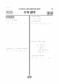

문제지

2022학년도 대학수학능력시험 · 2021년 11월 시행

시험지를 먼저 풀어 보세요. 등급컷·표준점수·난이도는 흐리게 가려 뒀어요.
| 등급 | 원점수 | 표준점수 | 백분위 | 누적 |
|---|---|---|---|---|
| 1 | 91 | 137 | 96 | 4.2% |
| 2 | 78 | 127 | 89 | 11.63% |
| 3 | 66 | 117 | 77 | 23.07% |
| 4 | 53 | 106 | 61 | 40.03% |
| 5 | 35 | 92 | 40 | 60.72% |
| 6 | 22 | 81 | 23 | 77.54% |
| 7 | 14 | 75 | 11 | 89.52% |
| 8 | 10 | 71 | 4 | 96.87% |
등급별 컷 · 만점 100점
정답 변경 없음
원문 표에서 이 과목 문항을 찾지 못했어요
수학 영역 전체 응시자 기준입니다. 한국교육과정평가원이 교육부 보도자료로 공개한 표준점수 도수분포로 계산했습니다.
발행 기관: 한국교육과정평가원(KICE). 파일 위치: 이 사이트가 보관한 사본 · 외부 서버 직접 링크(wdown.ebsi.co.kr). 저작권은 발행 기관에 있습니다. 원본과 다르거나 게시 중단이 필요하면 연락처로 알려 주세요. 등급컷 출처 구분은 데이터 원칙에서 설명합니다.
막대 색은 역대 대비 난이도 · 진한 막대가 이 시험 · 막대를 누르면 그 회차로 이동
| 회차 | 1등급컷 | 표점 최고 | 1등급 표점 | 난이도 |
|---|---|---|---|---|
| 수능2022학년도이 시험 | 91 | 147 | 137 | 어려움 |
| 9모2022학년도 | 91 | 145 | 133 | 어려움 |
| 6모2022학년도 | 89 | 146 | 134 | 매우 어려움 |